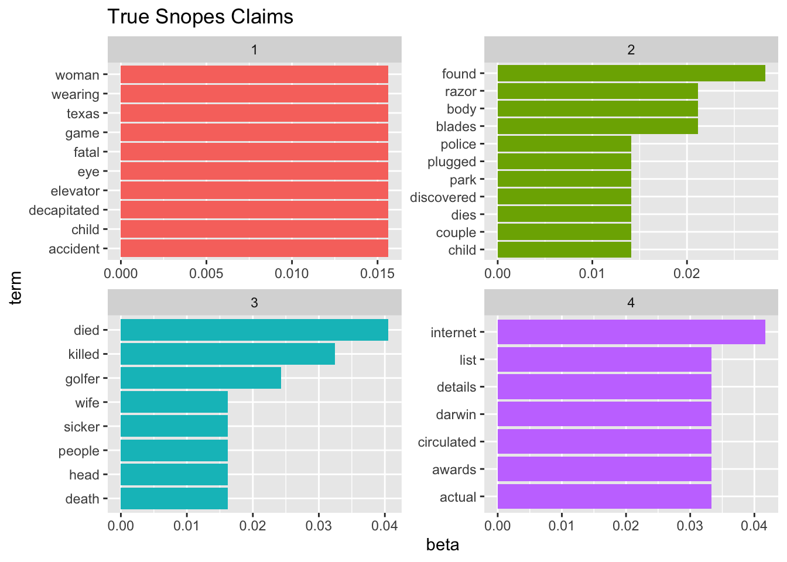
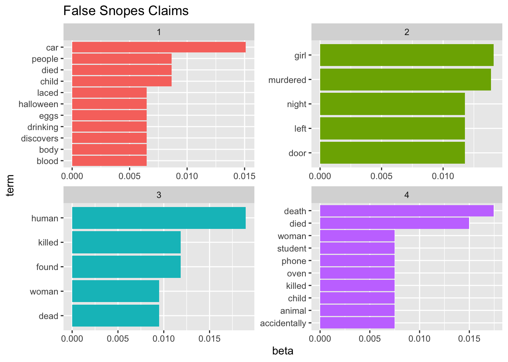
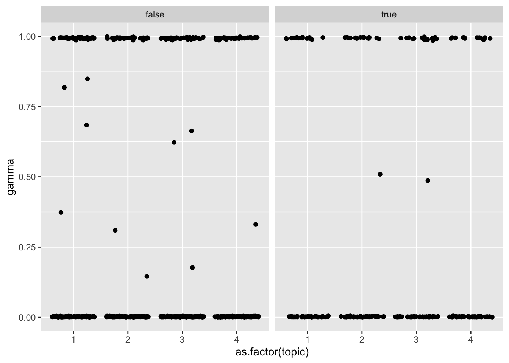
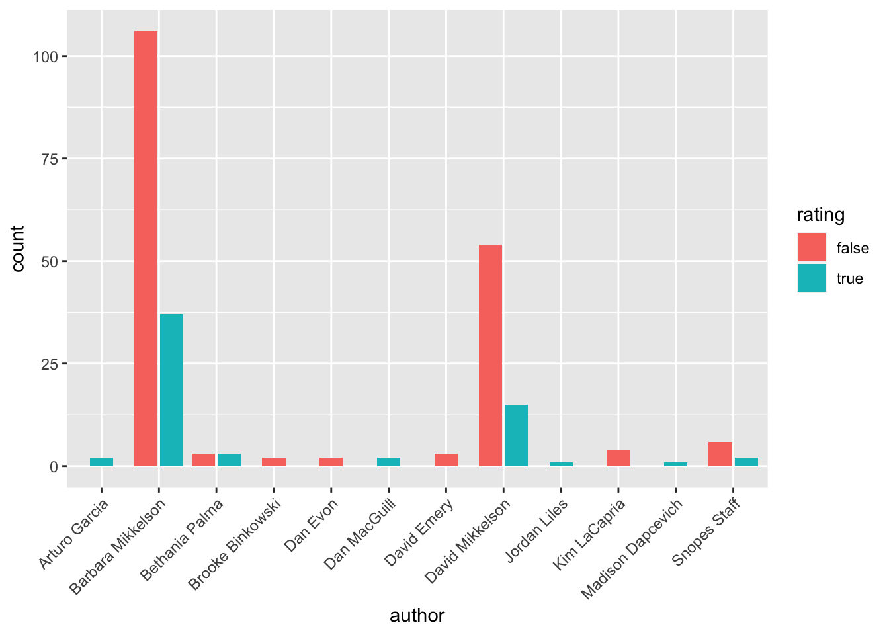
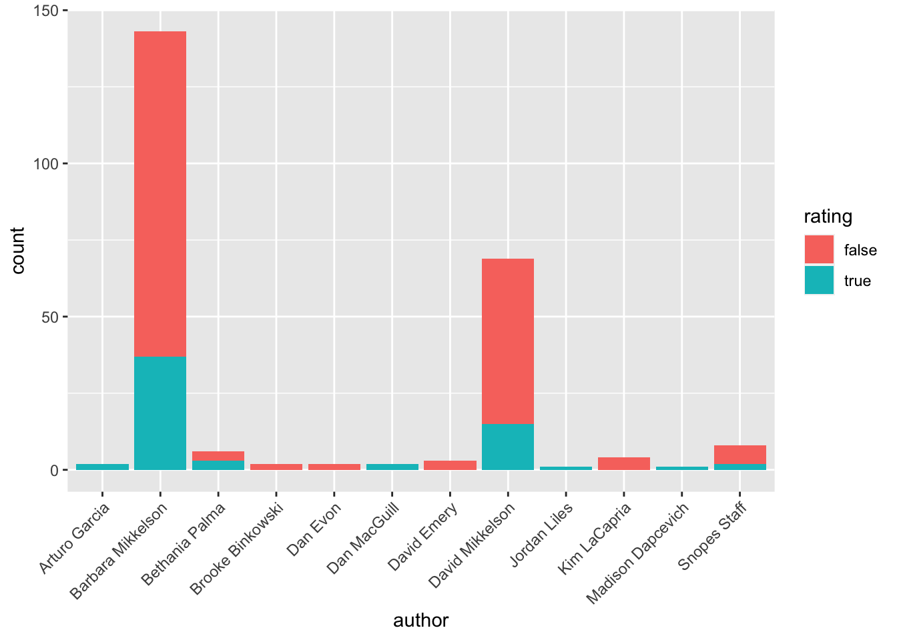

library(tidyverse) # ggplot, lubridate, dplyr, stringr, readr...
library(tidytext)
library(praise)
library(sf)
library(paletteer)
library(topicmodels)Snopes - horror articles
The data
The data explore horror legends from Snopes.com.
data(stop_words)
snopes <- read_csv("horror_articles.csv")
snopes_text <- snopes |>
select(claim, rating) |>
cbind(article = 1:253) |>
mutate(rating = case_when(
rating == "partly true" ~ "true",
rating == "mostly false" ~ "false",
rating == "legend" ~ "false",
rating == "probably false" ~ "false",
rating == "was true; now outdated" ~ "true",
rating == "mixture" ~ "true",
TRUE ~ rating
)) |>
rename(text = claim) snopes |>
select(rating) |>
table()rating
false legend miscaptioned
113 61 1
mixture mostly false partly true
10 5 2
probably false true undetermined
1 50 6
unproven was true; now outdated
3 1 snopes_text |>
select(rating) |>
table()rating
false miscaptioned true undetermined unproven
180 1 63 6 3 snopes_words <- snopes_text |>
unnest_tokens(word, text, drop = FALSE) |>
group_by(article, word, rating) |>
summarize(count = n()) |>
ungroup() |>
anti_join(stop_words)LDA
The goal is to figure out if the topics created through an LDA model will be similar for those articles which are validated to be true compared with those which have been disproven. As seen in the graphs, there are not obvious trends differentiating the two types of articles. Additionally, the topics within an article also seem quite similar, all eight of them focusing on death and killing.
#| fig.alt: Two sets of bar plots showing the value of beta from an LDA model. The first set is for Snopes claims that have been validated as true. Four different groups of words are given to represent four different topics. The second set is for Snopes claims that have been shown to be false. Four different groups of words are given to represent four different topics. All eight topics center around death and killing, and there are not obvious distinctions across the topic.
#| fig.cap: For each type of claim (True vs False), four sets of words (four topics) are given. All eight topics center around death and killing, and there are not obvious distinctions across the topic. Data credit: snopes.com
## TRUE reports
snopes_dtm_T <- snopes_words |>
filter(rating == "true") |>
cast_dtm(article, word, count)
snopes_lda_T <- LDA(snopes_dtm_T, k = 4, control = list(seed = 47))
snopes_topics_T <- tidy(snopes_lda_T, matrix = "beta")
snopes_top_terms_T <- snopes_topics_T %>%
group_by(topic) %>%
slice_max(beta, n = 5) %>%
ungroup() %>%
arrange(topic, -beta)
## FALSE reports
snopes_dtm_F <- snopes_words |>
filter(rating == "false") |>
cast_dtm(article, word, count)
snopes_lda_F <- LDA(snopes_dtm_F, k = 4, control = list(seed = 47))
snopes_topics_F <- tidy(snopes_lda_F, matrix = "beta")
snopes_top_terms_F <- snopes_topics_F %>%
group_by(topic) %>%
slice_max(beta, n = 5) %>%
ungroup() %>%
arrange(topic, -beta)
## Plotting
snopes_top_terms_T %>%
mutate(term = reorder_within(term, beta, topic)) %>%
ggplot(aes(beta, term, fill = factor(topic))) +
geom_col(show.legend = FALSE) +
facet_wrap(~ topic, scales = "free") +
scale_y_reordered() +
ggtitle("True Snopes Claims")

snopes_top_terms_F %>%
mutate(term = reorder_within(term, beta, topic)) %>%
ggplot(aes(beta, term, fill = factor(topic))) +
geom_col(show.legend = FALSE) +
facet_wrap(~ topic, scales = "free") +
scale_y_reordered() +
ggtitle("False Snopes Claims")

Gamma
snopes_gamma_T <- tidy(snopes_lda_T, matrix = "gamma")
snopes_gamma_F <- tidy(snopes_lda_F, matrix = "gamma")
snopes_gamma <- cbind(snopes_gamma_T, rating = "true") |>
rbind(cbind(snopes_gamma_F, rating = "false"))
snopes_gamma %>%
ggplot(aes(y = gamma, x = as.factor(topic))) +
geom_jitter() +
facet_wrap(~rating)

snopes |>
mutate(rating = case_when(
rating == "partly true" ~ "true",
rating == "mostly false" ~ "false",
rating == "legend" ~ "false",
rating == "probably false" ~ "false",
rating == "was true; now outdated" ~ "true",
rating == "mixture" ~ "true",
TRUE ~ rating
)) |>
filter(rating %in% c("true", "false")) |>
ggplot(aes(x = author, fill = rating)) +
geom_bar(position = position_dodge2(preserve = "single")) +
guides(x = guide_axis(angle = 45))

snopes |>
mutate(rating = case_when(
rating == "partly true" ~ "true",
rating == "mostly false" ~ "false",
rating == "legend" ~ "false",
rating == "probably false" ~ "false",
rating == "was true; now outdated" ~ "true",
rating == "mixture" ~ "true",
TRUE ~ rating
)) |>
filter(rating %in% c("true", "false")) |>
ggplot(aes(x = author, fill = rating)) +
geom_bar() +
guides(x = guide_axis(angle = 45))

praise()[1] "You are dandy!"